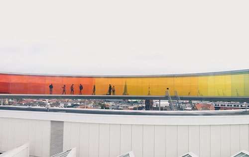

Foråret byder på masser af arrangementer, udstillinger og kurser i smilets by. Nedstående tekst giver et overblik over, hvad du kan finde af begivenheder - herunder udstillinger, arrangementer og kurser.

Udstillinger
D. 6 april åbner ARoS op for en ny udstilling kaldt ”Tomorrow is the Question” .
Udstillingen fokuserer på den fremtid, vi går i møde. Den stiller spørgsmålstegn og ønsker at fremme refleksion over nutiden og fremtidens udfordringer. Udstillingen er formet ud fra FN's 17 verdensmål for bæredygtig udvikling.
Udstillingen er lavet i samarbejde med Luise Faurschou og har været 3 år om at blive udviklet.
Tryk på billedet for at læse mere.
Arrangementer
D. 7 april holder tegneklubben sit 9. arrangement. Denne gang finder arrangementet sted hos Street Coffee ved Bassin 7. Tegneklubben er et åbent, gratis arrangement, hvor folk mødes om at tegne. Det eneste det kræver er, at du dukker op med de materialer, du ønsker at gøre brug af.
Tegneklubben er stiftet af illustrator Puk Ewdokia og kreativ iværksætter Rebecca Ross. Intentionen er at skabe et kreativt samlingspunkt, hvor alle tegneinteresserede personer kan komme.
Kurser
Skolen for Kunst & Design har åbnet op for kurser i foråret og sommeren 2019.
Inden for tegning bydes der på alt fra portrætstudier til intensiv tegning i en uge. Skolen byder også på længere kurser også kaldt "dagskolen". Her kan du tage et eller flere semestre, hvor du kan udvikle dine kreative færdigheder på professionel vis. Skolen tilbyder ikke en decideret uddannelse, men udvikler og forbedrer dine chancer for at komme ind på kreative vidergående uddannelser.
Hold øje med seneste tilmeldeling på tilgængelige kurser og ledige pladser.
Tryk på billedet for at få overblik over de kommende kurser.